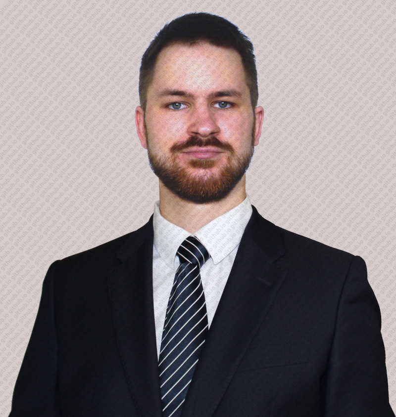

E-mail: filip.rupniewski[at]impan[dot]edu[dot]pl
Personal website: filip-rupniewski.github.io
Linkedin profile: Filip Rupniewski

E-mail: filip.rupniewski[at]impan[dot]edu[dot]pl
Personal website: filip-rupniewski.github.io
Linkedin profile: Filip Rupniewski
I am a mathematician specializing in algebraic geometry. I completed a postdoctoral research position at the Institute of Mathematics, University of Bern (UniBe), where I was part of the Applied Algebraic Geometry Group led by Prof. Dr. Jan Draisma . Prior to that, I earned my PhD at the Institute of Mathematics of the Polish Academy of Sciences (IMPAN) and my master's degree at the Faculty of Mathematics, Computer Science, and Mechanics of the University of Warsaw (MIMUW), both under the supervision of Prof. Dr. Jarosław Buczyński . Although I am currently not holding a formal position at these institutions, I maintain collaborations with them.
My research is focused on tensors, their geometry and properties, with applications to complexity theory. In particular:
For a complete list see here.
Fall semester 2024/2024:
Spring semester 2023/2024:
Fall semester 2022/2023:
Spring semester 2022/2023:
List of courses taught before:
Calculus, Discrete Mathematics, Mathematical Analysis, Linear Algebra